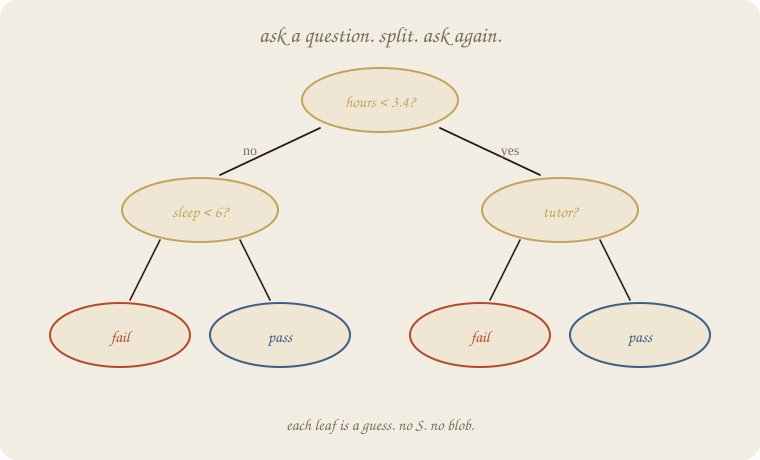
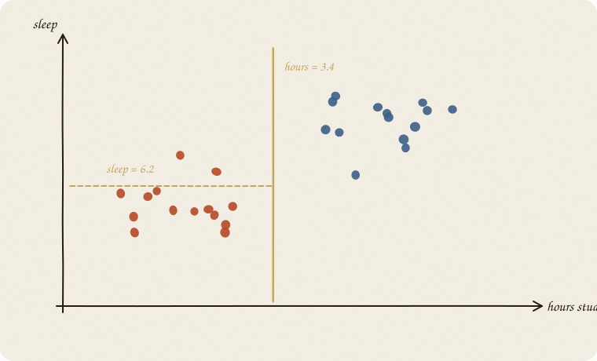
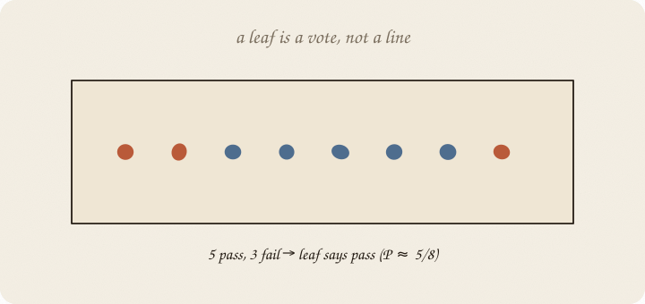
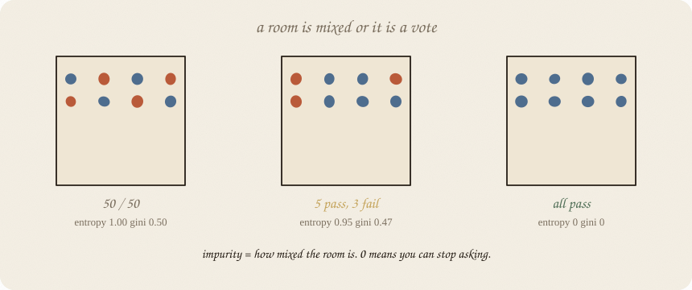
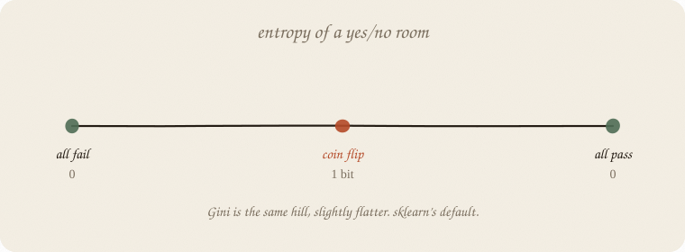
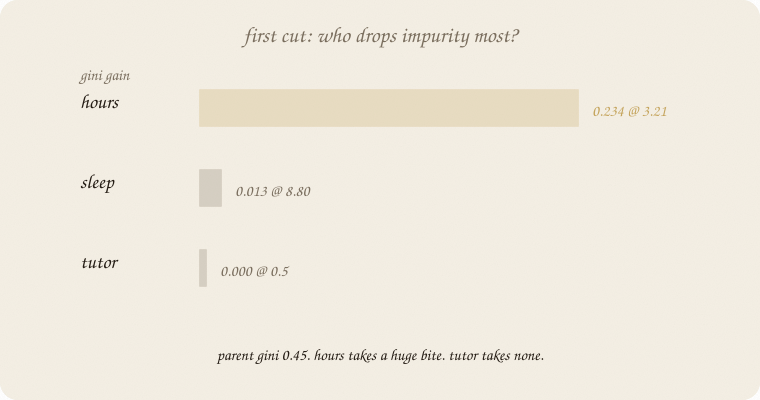
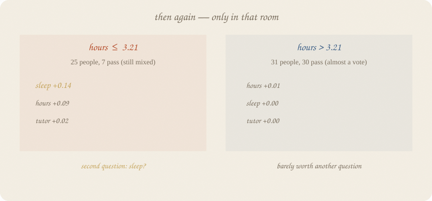
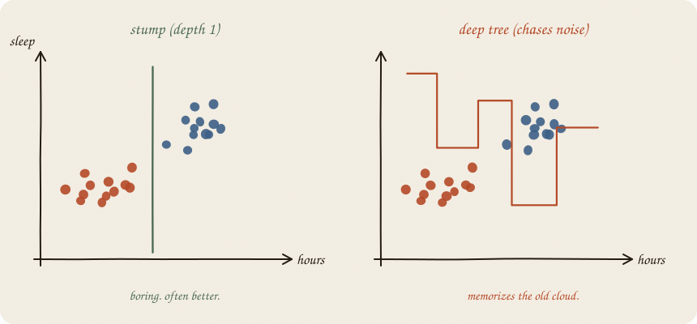

datazines · a sketchbook

Read 01 logistic regression first. Same pass/fail exam. Logistic drew an S. LDA drew two ovals. A tree draws rectangles with questions on the doors.
One tree. A forest is many of these (02 random forest).
Flip it like a notebook. One page = one idea. Done.
Logistic: score = a + b · hours, then squash.
LDA: two ovals, pick the nearer.
A tree speaks like a person:
If hours ≤ 3.21, guess fail.
Else guess pass.
That one-question tree is a stump. Add a second question, a third. The sentence becomes a flowchart. No b. No S. No covariance.
The exam story still holds. Hours, sleep, tutor. y is pass/fail.
The rest of this notebook is why hours went first.
The computer does not draw a diagonal LDA line. It picks one lever and a cut: hours = 3.4. Everyone left of the cut goes to one room. Everyone right, the other.

Then, in a room, it may cut another axis: sleep = 6.2. The map becomes rectangles. Never a tilt — unless you invent a tilted x yourself.
That looks crude. It is also why trees eat mixes: “hours low and sleep high” is two cuts, not a clever oval.
People in a rectangle: 5 pass, 3 fail. The leaf says pass. If you ask for a probability: 5/8.

No line through the room. No Gaussian. The guess is the majority (or the mean, if y were a grade — a regression tree). New student lands in a leaf, inherits that vote.
That is the whole predictor: which room did you fall into?
A room that is still 50/50 is a bad place to stop. That is impurity.
Eight people. Three rooms.

| room | mix | entropy | Gini |
|---|---|---|---|
| 4 pass, 4 fail | coin flip | 1.00 | 0.50 |
| 5 pass, 3 fail | a lean | 0.95 | 0.47 |
| 8 pass, 0 fail | a vote | 0 | 0 |
Entropy is “how many bits of surprise are left.” Coin flip = 1 bit. Pure = 0. You can stop asking.
$$H = -\,p\log_2 p - (1-p)\log_2(1-p)$$
Gini is the same hill, slightly flatter: probability two random people in the room disagree.
$$G = 1 - p^2 - (1-p)^2 = 2p(1-p)$$

sklearn’s default is Gini. Entropy is the textbook twin. They almost always pick the same first lever. They may disagree on the exact threshold. Both are “how mixed.” You do not need a physics course. You need: 0 = pure. 1 (or 0.5 for Gini) = useless mix.
Start with the whole training room. Ours: 56 people, 37 pass, 19 fail.
Parent Gini ≈ 0.45. Still mixed.
Try every lever, every possible cut. Score = how much the weighted average Gini of the two new rooms drops. That drop is information gain (entropy) or Gini gain. Biggest bite wins. That x goes first.

On this exam (seed 7, train split):
| lever | best cut | Gini gain | entropy gain | what the rooms look like |
|---|---|---|---|---|
| hours | 3.21 (Gini) / 3.57 (entropy) | 0.234 | 0.443 | left mostly fail; right almost all pass |
| sleep | 8.80 | 0.013 | 0.033 | peels off 3 people. cheap trick. |
| tutor | 0.5 | 0.000 | 0.000 | both rooms still ~66% pass. useless. |
Hours wins by a mile. Tutor is noise for a first cut. That is why the stump says:
hours ≤ 3.21 → fail
hours > 3.21 → pass
Not because hours is “more important in the universe.” Because this cut cleaned the room hardest.
Gini and entropy both pick hours. They disagree slightly on the number (3.21 vs 3.57). Same story.
The tree does not rank features globally and then use 2nd place next. It walks into each room and repeats the contest there.

Left room (hours ≤ 3.21): 25 people, only 7 pass. Still mixed (Gini 0.40). New contest:
| lever | Gini gain in this room |
|---|---|
| sleep | 0.137 ← wins |
| hours | 0.089 |
| tutor | 0.024 |
Second question: sleep ≤ 7.91? Low hours and low sleep → fail. Low hours but lots of sleep → a few sneak a pass.
Right room (hours > 3.21): 31 people, 30 pass. Gini already 0.06. Almost a vote. Extra cuts nibble 0.01. Barely worth asking. Depth 2 still fiddles here; a sensible tree could stop.
Order, then:
feature_importances_ on a depth-2 tree: hours 0.80, sleep 0.20, tutor 0.00. That is total Gini drop credited to each lever, not a mystical ranking.
Depth 1 — one cut. Stump. Boring. Often honest.
Depth 2 — a handful of rooms. Still a sentence you can read aloud.
Depth “until perfect” — a room for every oddball. Train accuracy 1.0. The next person is not those oddballs.

On this pass/fail class (eighty students, seed 7):
| tree | train acc | test acc | leaves |
|---|---|---|---|
| stump (depth 1) | 0.857 | 0.792 | 2 |
| depth 2 | 0.893 | 0.792 | 4 |
| deep (depth 8, actually 5) | 1.000 | 0.708 | 11 |
The deep tree memorized the old cloud and got worse on new people. Same lesson as an un-taxed line. Here the tax is don’t go deep (or don’t grow tiny leaves). Forests will tax by voting many jumpy trees — member overfit, choir not (02 random forest). Not this notebook.
If you keep only one thing:
first cut = biggest drop in mix. next cut = biggest drop in that room.
Same pass/fail class as logistic / LDA — eighty students, house seed 7. Not the thirty graders on the ridge page. The snippet prints the stump (Gini), the entropy stump, and depth 2 — so you can see first vs second.
import numpy as np
from sklearn.model_selection import train_test_split
from sklearn.tree import DecisionTreeClassifier, export_text
rng = np.random.default_rng(7)
n = 80
hours = rng.uniform(1, 6, n)
sleep = rng.uniform(4, 9, n)
tutor = (rng.random(n) > 0.6).astype(float)
z = -3.2 + 1.05 * hours + 0.25 * (sleep - 6.5) + 0.7 * tutor
passed = (rng.random(n) < 1 / (1 + np.exp(-z))).astype(int)
X = np.column_stack([hours, sleep, tutor])
names = ["hours", "sleep", "tutor"]
Xtr, Xte, ytr, yte = train_test_split(X, passed, test_size=0.3, random_state=0)
for crit in ("gini", "entropy"):
t = DecisionTreeClassifier(max_depth=1, criterion=crit, random_state=7).fit(Xtr, ytr)
print(crit, "stump")
print(export_text(t, feature_names=names), end="")
print("importances", dict(zip(names, t.feature_importances_.round(3))))
print()
t2 = DecisionTreeClassifier(max_depth=2, criterion="gini", random_state=7).fit(Xtr, ytr)
print("depth 2")
print(export_text(t2, feature_names=names), end="")
print("importances", dict(zip(names, t2.feature_importances_.round(3))))
print("acc train/test", round(t2.score(Xtr, ytr), 3), round(t2.score(Xte, yte), 3))
gini stump
|--- hours <= 3.21
| |--- class: 0
|--- hours > 3.21
| |--- class: 1
importances {'hours': 1.0, 'sleep': 0.0, 'tutor': 0.0}
entropy stump
|--- hours <= 3.57
| |--- class: 0
|--- hours > 3.57
| |--- class: 1
importances {'hours': 1.0, 'sleep': 0.0, 'tutor': 0.0}
depth 2
|--- hours <= 3.21
| |--- sleep <= 7.91
| | |--- class: 0
| |--- sleep > 7.91
| | |--- class: 1
|--- hours > 3.21
| |--- hours <= 3.57
| | |--- class: 1
|--- hours > 3.57
| | |--- class: 1
importances {'hours': 0.798, 'sleep': 0.202, 'tutor': 0.0}
acc train/test 0.893 0.792
Gini vs entropy: both hours first. Cut 3.21 vs 3.57 — same story, different yardstick.
Depth 2: sleep is allowed to speak only after hours put you in the mixed left room. Tutor still 0.
Deep tree from the old page, for the tax lesson: max_depth=8 → 11 leaves, train 1.0, test 0.708. Memorized.
class: 0 is fail, 1 is pass.
| word | meaning |
|---|---|
| cut | one x, one threshold, two rooms |
| impurity | how mixed a room is |
| entropy | −p log₂ p − (1−p) log₂(1−p). 0 = pure, 1 = coin |
| Gini | 2p(1−p). sklearn default. same idea |
| gain | parent impurity − weighted child impurity |
| first feature | the cut with the biggest gain on the whole room |
| second feature | biggest gain in that child room, not 2nd place overall |
| leaf | a room with a vote (or a mean) |
| stump | depth 1 |
| depth | how many questions stacked |
Also called (in a room):
| here | there |
|---|---|
| room | node |
| cut | split |
| leftover mix | impurity |
Reach for it when you want rules you can read; x mix (hours low and sleep high); a first look before a forest; y is a class or a number.
Skip it when one deep tree on tiny data (it will memorize); you need a smooth S (01 logistic regression); the truth is two ovals (02 LDA); you already know you want 500 trees — still read this, then grow a forest. Don’t start at XGBoost.
Pays you: no scaling drama. Mixes for free. A sentence. The atom of bagging and boosting. A reason for feature order (gain), not a vibe.
Costs you: jagged boundary. Unstable: a new sample, a different first cut. Depth is a loaded knob. One tree is rarely the final model — it is the brick.
Brick for the ensemble wall. Next, many trees vote: 02 random forest. Then leftover-trees: 03 gradient boosting. LDA if you still want ovals: 02 LDA.
Flip it like a notebook. One page = one idea.